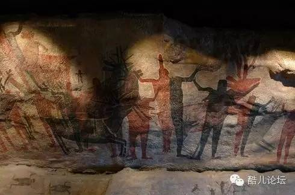

为什么在文明社会中，人们会渐渐偏向中性化？
转载自知乎—为什么在文明社会中，人们会渐渐偏向中性化？作者：周卜
在这斯坦福大学桑德拉·贝姆曾提出，一个更协调的人，可以有效融合男性化和女性化的两种行为，这样的人会比那些表现出极度男性化或女性化的人更加快乐，调适能力也更强。在一些知友的回答中，也曾看见许多类似的说法，随着社会的发展，人们也会渐渐趋于双性化，这是为什么呢？
这个问题，我会尝试从三个角度回答：
第一，现代社会确实发生了性别差异趋向模糊的现象吗？
第二，从历史来看，文化的发展会鼓励性别差异模糊吗？
第三，从人类学的视角，我们应当如何理解这个现象？
1 现代社会确实发生了性别差异趋向模糊的现象吗
答案是肯定的。
此处我们援引美国社会学家康奈尔在《性与权力》、《男性气质》所做的研究，以及Susan Faludi在《上当：现代男人的背叛》和《反挫：谁与女人为敌》所作的研究。（引用自安东尼·吉登斯《社会学》）
男性气质是性别秩序的重要组成部分，是父权制中“男性支配女性”这种“意识形态”的表现。性别气质和其他人类的文化属性一样，不是生物性的必然特质，而是社会发展出来的。在不同的文化中、不同的时代中，它都会有不同的含义。在传统的现代社会中，男性是“家庭的赡养者、安全感的提供者、权威的来源”，但现代社会的转型让它难以维系了。
导致“性别气质危机”的原因有这么几个：1.西方发达社会中，大量的男性长期失业、依靠国家救助，大量男性不再是家庭的经济支柱；2.女性在教育和经济中逐渐和男性平等，经济上不依赖男性，思想上也不依赖男性的权威；3.婚姻关系变得不稳定、亲缘关系逐渐淡漠；4.社会生活中两性逐渐平等，禁区越来越少。
用通俗点的语言来说：传统社会要求男人提供经济上的保障和思想上的权威，但是他们现在越来越难去提供这些东西了，他们和女性之间拉不开差距。当一种社会期望越来越难实现时，大量的个体需要重新定位自己应当扮演的角色，以便调整对自身的认知，导致了大量“女汉子”和“食草男”的出现。
2 从历史来看，文化的发展会鼓励性别差异模糊吗
允许我换一种表述方式：一个社会/阶层/群体/家庭长期的稳定、和平（或较少遇到威胁）、繁荣（或富裕），会让它的文化和个体气质趋向温和、敏感、热爱艺术吗？答案是：会。
经济学家、社会学家阿尔弗雷德·帕累托的精英循环论说到了这一点：从下层上攀的精英家庭，会逐渐丧失野心和攻击性，变的细腻、敏感、热衷于艺术，几代之后被那些野心勃勃而粗野的下层取代，周而复始。文明兴衰的逻辑固然复杂的多，但有一点比较容易观察得到：长期和平、缺少外部威胁并繁荣的文明，更加鼓励温和的性格、并且热爱文化艺术。
帕累托的“精英循环论”是他抽象的“剩遗物”理论中引用的一个实例，可以简单解释成：人类精神气质中的冒险精神（第一类剩遗物）和追求稳定的精神（第二类剩遗物）此消彼长，像流沙和沉泥在沙漏中此消彼长。虽然他没有直接提到“女性气质”和“男性气质”，但是作为一个恰好身处长期和平稳定繁荣时代的人，我们很容易观察到“细腻、敏感、热衷于艺术”的男性越来越多。因为长期和平稳定繁荣的时代，阶层流动缓慢，精英固化幷发展出繁冗精致的文化追求，这种追求从中上层阶级逐渐向下渗透，潜移默化地改变着整个社会的精神气质。
例如：保罗·福塞尔在《格调》一书中描述美国中上层精英阶层的品味时写过：当时的美国中下层喜欢皮制的配件和别在腰上闪闪发亮的钥匙扣，但是中上层人士绝不会用，因为这种喜好源自体力工人阶级对“男性气质”的追求。上层男性的外套绝不会有肩扣，他们喜欢平滑而狭窄的肩膀；宽阔高耸的肩膀是体力劳动者的特征，肩饰可以凸显男性身体健壮的特质，因此中上层不会喜欢。
我们会发现：长期和平稳定繁荣的社会中，衣着、物品中的社会审美都会变得“女性化”，逐步淡化男性体力劳动者的色彩；这种文化偏好会随着社会陷入危机而改变。

3 从人类学的视角，我们应当如何理解这个现象？
美国著名人类学家玛格丽特·米德在《三个原始部族的性别与气质》中介绍了三个地理位置接近但气质迥异的部落：阿拉佩什人、蒙杜古马人和德昌布利人。一个部落男女都性情温顺、平易近人，以养育儿女作为人生中的大事；一个部落性情暴躁，嗜好猎取人头、食人肉，以此为炫耀的资本，男女皆粗暴强悍，人际关系紧张；第三个部落是爱好艺术的民族，男性性格柔和、喜爱艺术，女性从事捕鱼、是的经济来源的保障，男人们颇为不屑的看着女人捕鱼， 而自己在专心绘画雕刻，钻研舞蹈，以便在舞会时让女人观赏。
三个不同的部落， 虽然地理位置相差不远，但“气质”迥异，“娘娘腔”这样的话绝对 不会出现在阿拉佩什人和蒙杜古马人口中 ，因为他们的社会中不会强调性别的差异。
同样，哈维兰在他的《人类学概论》中提到：北美某些农业和狩猎混合的部落中，每个人在某个年龄可以选择自己的“性别”，如果一个生理上的男性选择做女人，那他将留在部落中种植和维护村庄，所有人都会当他是女性而无异议；如果一个生理上的女性选择做男人，那她可以从事狩猎和战争，不再会有人当她是女人。在古代西非的达荷美王国，女性和男性一样在军队中服役。
在人类学中，一个社会可以是“性别分工”的，在这种社会中，男子和女子很少从事同一种工作，男性去做符合男性气质的工作，女性去做符合女性气质的工作。一个社会也可以是“双性”取向的，男性和女性普遍参与到社会各项事务中，各自的利益在每个层面都得到了很好的表达。
从这个角度看，当代的“男性气质危机”和“女性气质危机”，也许是传统“严格性别分工社会”逐渐转型为“性别分工模糊社会”的结果。人类并非只有过一种性别气质，在很多个社会中，男性和女性并未被期望拥有迥异的性格、气质和社会角色。“女性化”和“男性化”不过是特定文化背景和历史时代的定义，包含了各种模糊的、持续变化的判断。当代社会的性别气质危机，也不过是人类数万年历史中的沧海一粟。